—— V5 · 原创长篇 ——
千 局
第一章：底牌
赌神 × 商战 × AI创业
↓ 向下滑动开始阅读 ↓
高 手 过 招
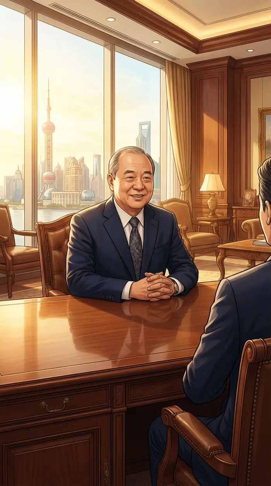
陈局的办公室在陆家嘴最高的那栋楼的第52层。上海的天际线在落地窗外铺成一张巨大的棋盘，晨光把每栋大厦都镀上一层金。第一次见面就约在主场。经典的心理压制开局——"看看我的资源，然后乖乖听话。"
我坐在访客椅上，端着他的好茶，脸上挂着得体的微笑。但我的眼睛一直在工作——扫描他的每一个动作，每一个表情变化，像拆解一局德州扑克。牌桌第一法则：坐下来的头三分钟，什么都别说，什么都看在眼里。
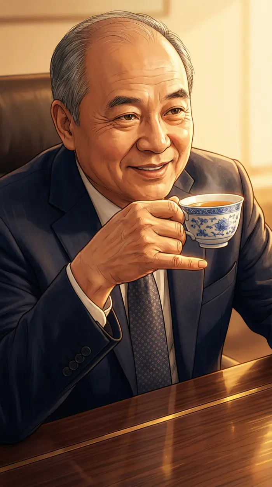
陈局端起茶杯，小拇指微翘，嘴角弧度恰到好处——四十年商海练出来的标准笑容。但他端杯的角度暴露了一切。茶杯举太高了。你紧张了，陈老板。这是在虚张声势。
我微微眯起眼睛。在我的视角里，他的办公桌变成了一张绿色的牌桌，合同文件变成了翻面的底牌，他的笑容变成了——一个扑克牌手最经典的"我手牌很好"的假表情。可惜，你碰到的是"千局"。
陈局的助理踩着高跟鞋进来了，手里捧着一个文件夹。进来的时间是陈局第三次喝茶之后——精确到秒。配合出牌。她进来的时机是提前安排好的，用来打断我的思考节奏。老套路了。
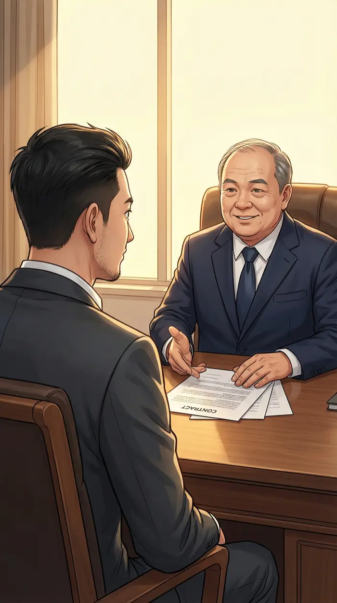
"朱总啊，我们对辰光科技的AI技术是非常看好的，"陈局把合同推过来，笑得像个慈祥的长辈，"这个条件，整个行业你去打听打听，没有比这更好的了。"我接过合同，翻开第一页。笑容不变，大戏开始。
第 十 七 条
我一页页翻着合同，表情配合地时不时点头。翻到附件第17条的时候，我的手指停了半秒。找到了。控制权转让条款，埋在一个看似无害的"业绩对赌"里。六个月达不成KPI，董事会席位自动过半。高，实在是高。
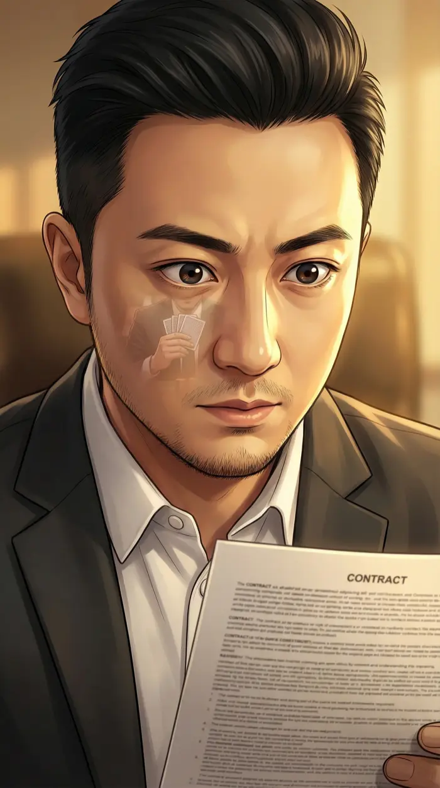
我的瞳孔微微收缩——这是我唯一的破绽，但陈局不可能看到。因为我低着头"认真看合同"。好牌不急着出。当年在地下牌局，我拿到同花顺也是这副表情——慢慢翻，慢慢看，让对手以为我在犹豫。
我抬头看陈局，笑得比他还真诚："陈总，条件确实很好，我回去和团队讨论一下，尽快给您答复。"翻译：我看到你的底牌了，但我不会告诉你我看到了。先让你以为自己在做庄。
决策点一：发现合同陷阱
A. 当场指出陷阱，正面对抗
直接翻脸："陈总，第17条这个控制权条款，您是当我不识字吗？"
B. 假装没看到，暗中准备反击
不动声色，笑着离开。回去布局，等时机成熟再一击致命。
🃏 我选了B
好牌不急着出。不打无准备之仗，先收集信息再出手——这是千局的规矩。
SOUL：菩萨心肠霹雳手段。能看穿陷阱说明眼力够，选择隐忍说明格局够。霹雳手段不是随时都用，而是在最关键的时刻一击必杀。
握手告别。陈局的手劲比见面时大了三分——他以为自己赢了。我的手劲保持不变——因为我知道，这局牌才刚翻了第一轮。陈老板，你以为你在做庄？这局……我才是发牌的人。
内 鬼
推开公司大门的时候，气氛就不对。平时嘻嘻哈哈的办公区安静得像考场。不好。这种安静我见过——大学牌局出千被发现时，整桌人就是这种安静。
林小棉朝我冲过来，眼镜歪了都顾不上扶，手里抱着笔记本电脑像抱着一颗定时炸弹："老大！出事了！竞品今天发了一个产品——和我们的架构一模一样！连API接口命名都一样！"
我看着屏幕上竞品的发布页面，脑子里的扑克桌又浮现了。有人在出老千。API接口命名一样？这不是巧合，这是内鬼。有人把我们的底牌翻给了对手。
我攥紧了拳头，指节发白。但只持续了两秒。愤怒是最没用的情绪。愤怒让你看不清牌面。冷静下来，分析，找漏洞，设圈套。
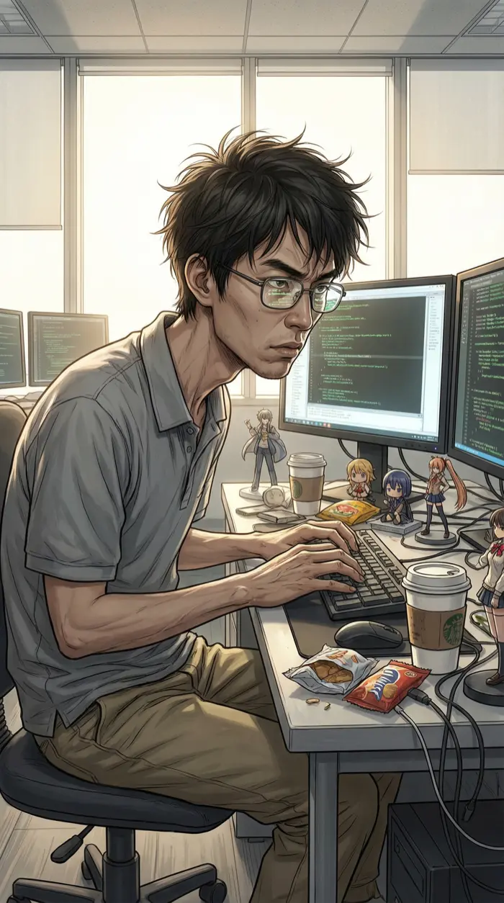
林小棉已经钻进了他的三屏工作站，手指在键盘上飞舞，屏幕上代码像瀑布一样滚动。他查代码库访问日志的速度比说话流利多了。社恐归社恐，这哥们排查安全漏洞比谁都快。这就是为什么他是我唯一的技术合伙人。
小鱼在我桌上弹出了全员可疑度分析。排第一的可疑度87%，排最后的——"小鱼：可疑度0.01%。备注：昨晚多看了代码库两眼，但那是因为在学习！绝对不是偷代码！真的！"……你都写备注自证清白了，你说你不可疑谁信？
三 条 假 信 息
我把林小棉拉进会议室，在白板上画了三条线。"嫌疑人三个，对吧？"我转过身看他，"德州扑克有一招叫'标记牌'——给每张牌做不同的记号，看哪张被偷看了就知道谁在作弊。"
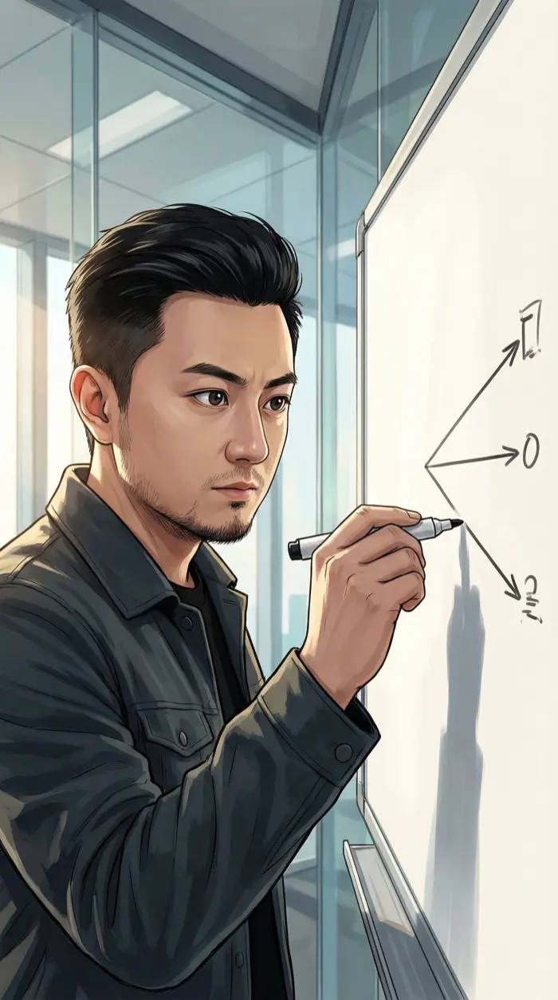
白板上三条线清清楚楚：甲路线——"新算法用了Transformer架构"；乙路线——"新算法用了Mamba架构"；丙路线——"新算法用了混合架构"。每条假信息只透露给一个人。看哪个版本泄露出去，内鬼就现形了。博弈论入门级操作——但有效就行。
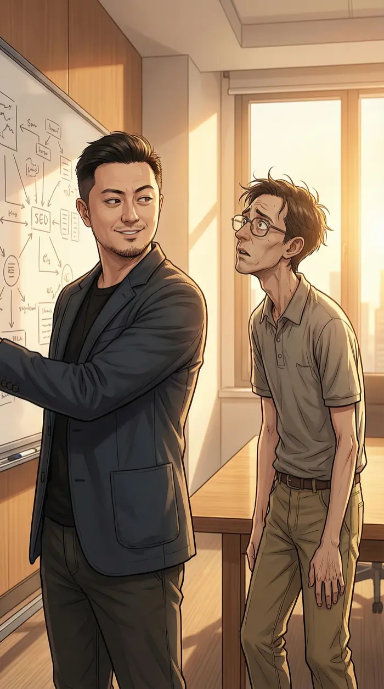
我转过身，对着白板，嘴角勾起一个弧度。林小棉看着我的表情往后缩了缩——他认识这个笑容。大学牌局上每次我露出这个笑容，对面就要输光筹码。千局的规矩：不是我翻你的底牌，而是你自己把底牌翻给我看。
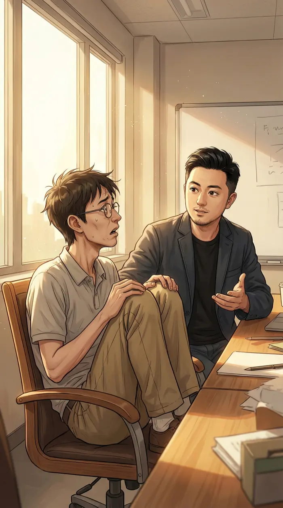
"小棉，这个计划需要你去跟嫌疑人B吃个饭，自然地把假消息透给他。"我话音刚落，林小棉整个人缩进了椅子里，脸上写着四个大字：社交恐惧。"我……我能不能用Slack消息代替？"不能。你得用嘴说。我知道这对你来说比写十万行代码还难。
决策点二：如何锁定内鬼
A. 直接审问三人
效率高，但可能打草惊蛇。万一审错了，真内鬼反而会更小心。
B. 设计"信息陷阱"——给三人各透露不同假信息
经典博弈论策略。慢一点，但100%精准锁定。
🃏 我选了B
好的牌手从不正面亮牌。设个局，让对手自己把底牌翻出来。
SOUL：黑客基因——拆解系统运作方式。不管是扑克概率还是商业博弈，核心都是信息不对称。谁掌握了信息，谁就是做庄的人。
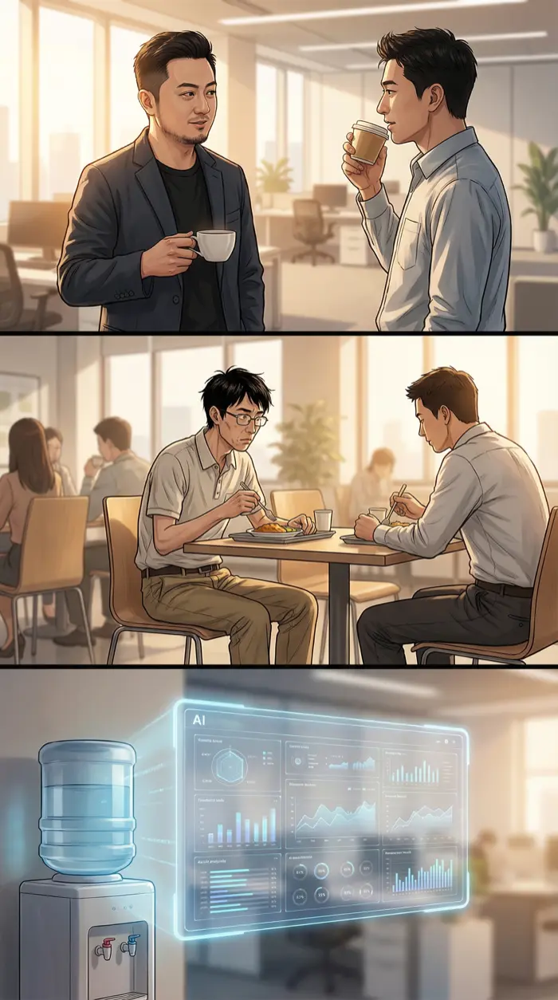
三天后。三条假信息像三张标记牌一样发了出去。我在办公室喝咖啡假装什么事都没有，林小棉在他的工作站监控所有出站数据。小鱼在后台像一条真正的鱼一样巡逻数据流。猎人布好了陷阱，现在只需要等。
底 牌 翻 开
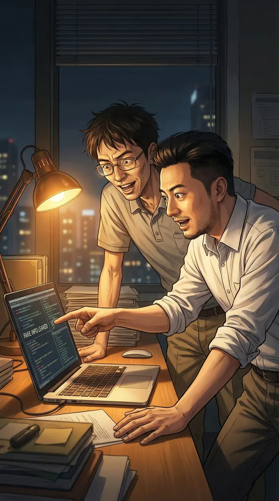
深夜十一点，办公室只剩我和林小棉。桌上的台灯把我们的影子拉得很长。林小棉突然猛拍桌子——这是他这辈子做过的最有激情的社交动作："抓到了！丙路线——混合架构版本泄露了！"
屏幕上，数据泄露的路径像一条发光的线，从嫌疑人丙的工作邮箱出发，经过三个中转节点，最终抵达了——等等。这个接收端……不是竞品的服务器。
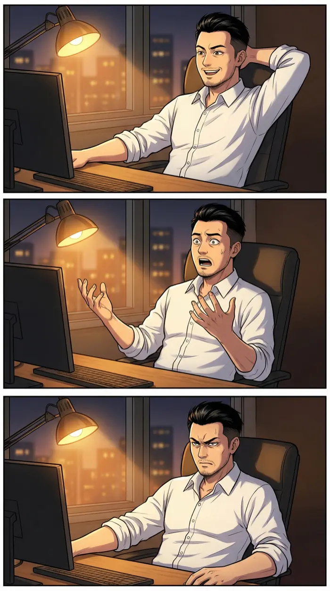
我盯着屏幕上的接收端IP地址。顺着查下去，域名注册信息，公司关联关系——最终指向了一个名字。陈局。是陈局的人。内鬼不是贪钱，是被安插的。这个老狐狸在投资之前就开始布局了。我的手指在桌面上慢慢停下来。
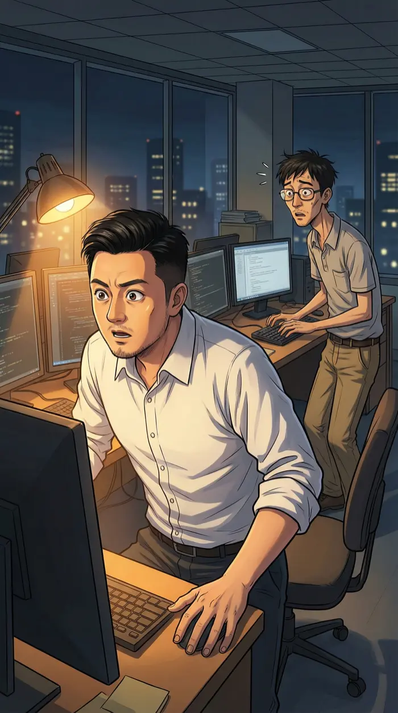
我猛地站起来，椅子向后滑出去撞上了墙。林小棉吓了一跳差点把眼镜弹飞。第17条的控制权陷阱、安插内鬼偷技术、竞品突然发布……这不是三件独立的事。这是一整盘棋。陈局从头到尾都在做庄。
但震惊只持续了五秒。然后一种奇妙的感觉从胸口升起来——不是恐惧，是兴奋。嘴角不受控制地翘起来。好久没碰到过这种级别的对手了。大学毕业以后，就再也没人能让我有这种……棋逢对手的快感。
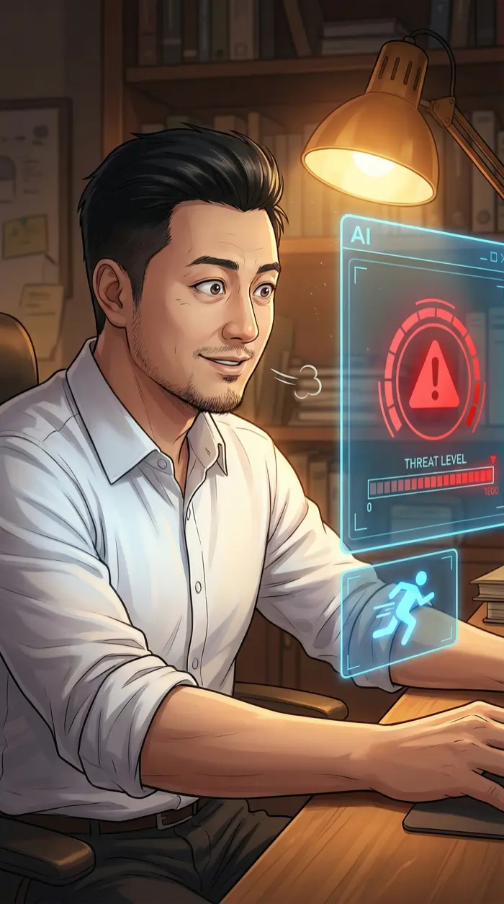
小鱼在旁边疯狂闪烁："⚠️ 威胁等级：红色！建议行动方案计算中……方案一：跑路。方案二：快跑。方案三：现在就跑——算了，根据历史数据分析，你不会跑的。"你终于学聪明了。
千 局
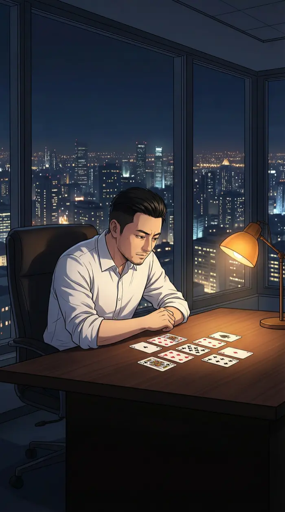
深夜的办公室只剩我一个人。林小棉已经回去了。我把一副扑克牌摊在桌面上——这是我的习惯，想不通的事情就一边洗牌一边想。城市的灯火在窗外延伸到天际线。每一栋楼都是一张牌，每一家公司都是一个玩家。
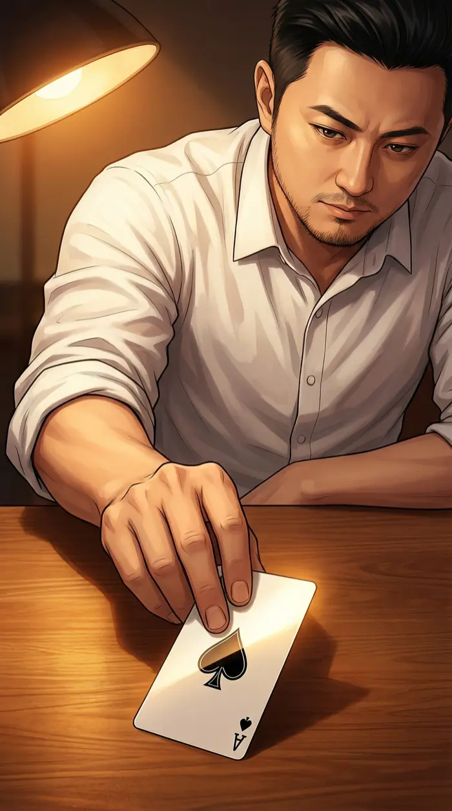
我翻出一张牌。黑桃A。德州扑克里，黑桃A是最大的起手牌——但单张A什么都不是。你需要配合，需要公共牌，需要对手犯错。
黑桃A在台灯下泛着光。我笑了——不是得体的商务微笑，是那种大学地下牌局时才会露出的笑容。危险的、兴奋的、势在必得的笑。陈局，你以为你在做庄？你只是翻了一轮牌而已。真正的庄家——千局——还没开始发牌呢。
决策点三：如何应对陈局的棋局
A. 收集更多证据，慢慢反击
稳妥，但给了对手更多时间。陈局也在布局。
B. 主动出击，约陈局打一场真正的牌局
高风险高回报。把商业博弈搬到真正的牌桌上，面对面读他的底牌。
🃏 我选了B
千局的名字不是靠等出来的。12%的胜率？当年就是从12%翻盘开始的。
SOUL：霹雳手段 + 热血。看清了全局之后，不再隐忍。千局不可能选择被动等待——攻比守更适合他的血液。
小鱼的声音弱弱地从屏幕边缘冒出来："老板，概率模型显示……我们的胜率只有12%。"我把黑桃A竖起来，对着城市的灯光。"小鱼，当年'千局'这个名字是怎么来的，你知道吗？""……百度百科上没有这个词条。""那是因为，千局的传说——就是从12%翻盘开始的。"
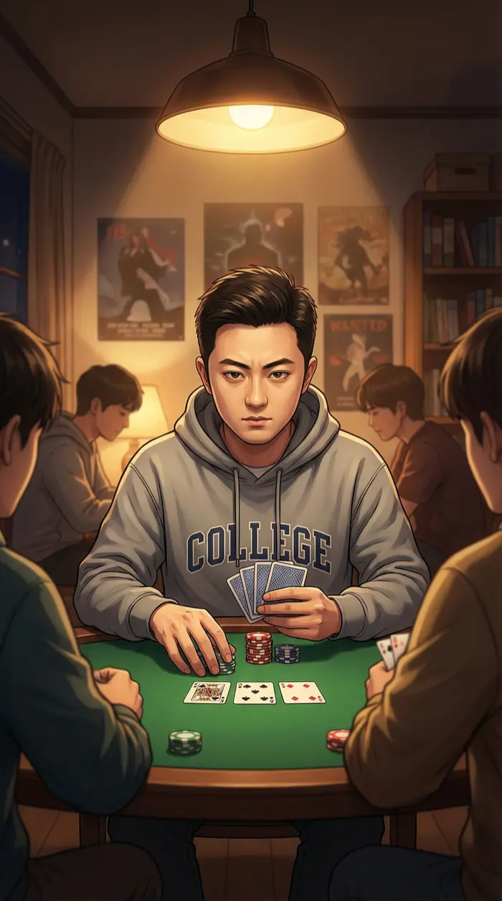
大学时代的画面闪过脑海。那个抽着廉价烟、穿着连帽衫的少年，在昏暗的灯光下对着一桌老手亮出同花顺。那一晚，所有人记住了一个名字——千局。很久了。久到我以为那个人已经不在了。但他一直在。他一直在我血液里。
我拿起手机，拨出一个号码。站在落地窗前，城市的灯光在脚下铺成一张巨大的牌桌。电话接通了。"陈总，好久没一起坐坐了。周六晚上，有没有兴趣打几圈牌？老地方见。"
挂了电话。嘴角的弧度没有收回。陈局，这局牌，我做庄。
城市的灯火如同一盘永不停歇的牌局。
在第52层的某个窗口里，有人刚刚亮出了底牌。
而更精彩的牌局——才刚刚开始。
—— 第二章：牌桌 ——
陈局的主场。一张真正的牌桌。
商业博弈从会议室搬到了绿色的桌面上。
筹码、底牌、all-in——每一手牌都是一个商业决策。
而千局……已经很久没有认真打过牌了。
「当年赢得千局之名的那一手——是所有人都以为我会弃牌的那一手。」